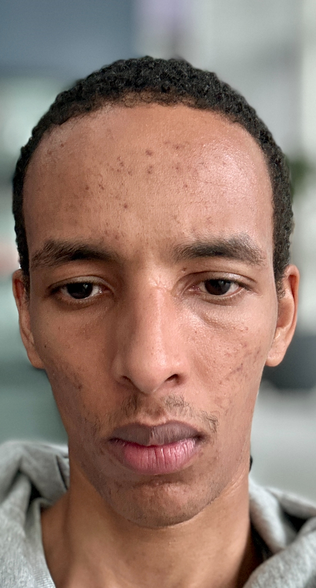

Ahil Ali

Profile Summary
A results-driven individual with a track record in developing upcoming
markets and successfully dealing with different clients to create
problem-solving business objectives. I am seeking a challenging role
where I can contribute my skills and gain more experience.
Education
- Accounting and management Lycée René Cassin. Strasbourg, France. (2019-2020)
- University of Strasbourg Language/International Business. (2022-2023)
Work Experience
- Internship - Librairie Kléber. Strasbourg, France.
2018 - 2019
- Helping clients, checkout and advising clients on new products.
- Receptionist - Crous Strasbourg. Strasbourg, France.
September 2019 - December 2023
- Dealing with student housing and finance.
- Daily inquiries.
- Consultant - Bilays International Exporters ltd. Dubai, UAE.
September 2023 - Present
- Assess future activities in foreign markets, such as opening a new
facility or identifying a new business partner.
- Communicate effectively with clients in English and other
languages, such as the native language of the country where one
is based.
Skills
- Microsoft Office Suite
- Public Relations
- Organization skills
- Teamwork
- Time Management
- Leadership
- Effective Communication
- Critical Thinking
languages
- English: Fluent
- French: Fluent
- Arabic: Basics
Other